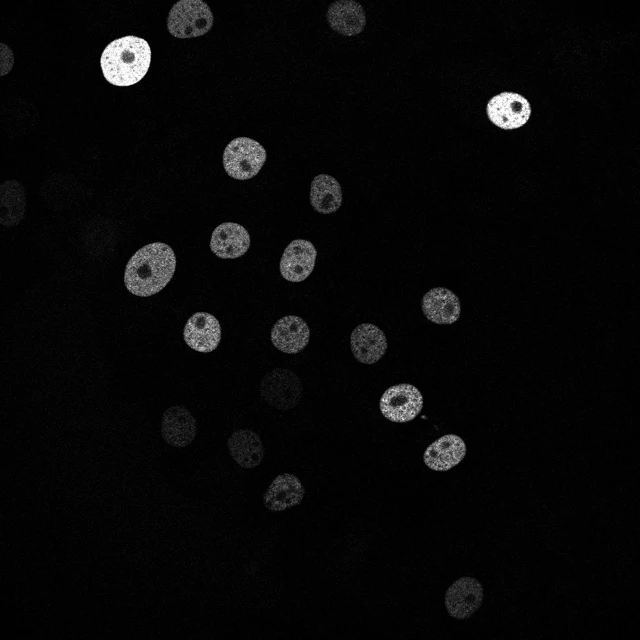

From instances
to cell
histories.
Connect segmented cells across time. CITrackastra brings transformer-based tracking to calibrated microscopy images, with traceable trajectories and physical measurements.
Powered by Trackastra · local pretrained weights · research workflow

Keep the biology.
Connect the timepoints.
Segment first with CISegmentation or another instance model. Trackastra predicts associations; CITrackastra preserves source pixels and records every link.
Bring your instances
OME-Zarr HCS plates with 2D time series and matching labels. Every field is checked independently.
Require physical units
Positive XY sizes and matching labels in every field. Volumes and static plates are rejected.
Predict the links
General 2D, CTC or SAM2 features. Greedy linking with or without divisions, or ILP optimization.
Inspect cell histories
Additional trajectory labels, SQLite and CSV tables, source IDs and model provenance.
See the predictions.
Know their limits.
The gallery uses actual predictions on public, physically calibrated data. Reference markers are inputs for smoke validation; this is not a segmentation benchmark.
Play through real trajectories ↗
Move through short and full-length sequences, inspect source images and follow predicted paths.
02 / UsageOne headless workflow ↗
Local CLI, NVIDIA CUDA, cached models and Bilayers/BIOMERO integration.
03 / EvidenceValidation and limitations ↗
Test coverage, actual device runs, calibration sources and deployment status.
Begin locally.
Download all three tracking checkpoints and the SAM2 backbone once, then infer from the local cache.
Installation and commands ↗git clone https://github.com/Cellular-Imaging-Amsterdam-UMC/citrackastra.git
cd citrackastra
create_env.cmd
install_cuda.cmd
.venv\Scripts\python tools\download_models.pyPython 3.11 · CPU or NVIDIA CUDA · Docker recipes prepared separately.